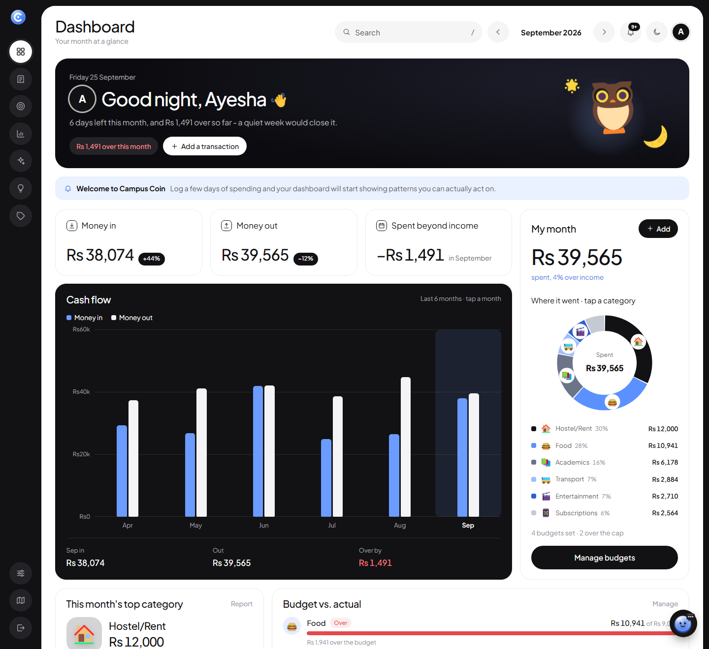
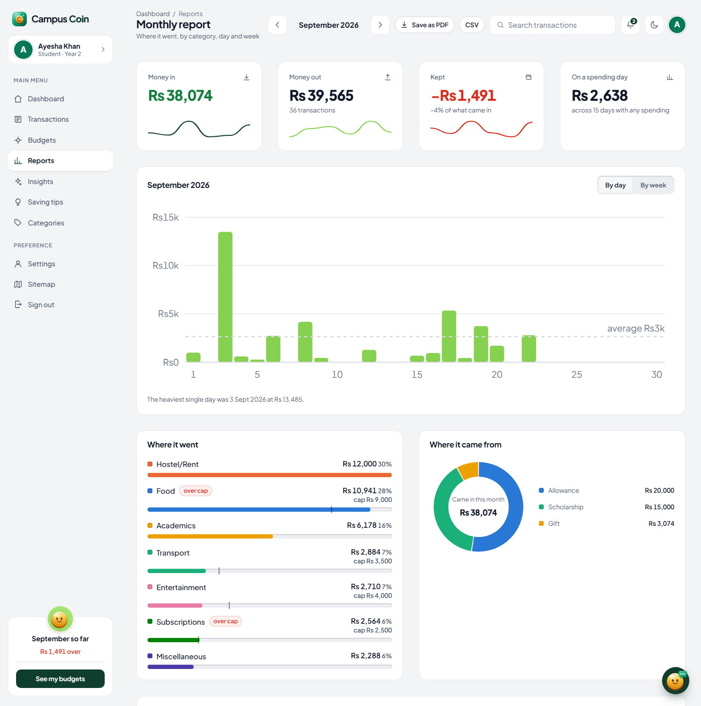
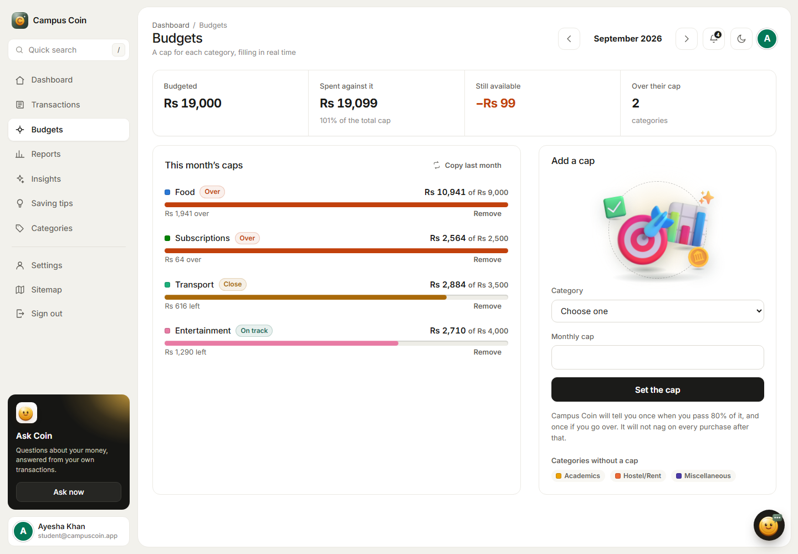
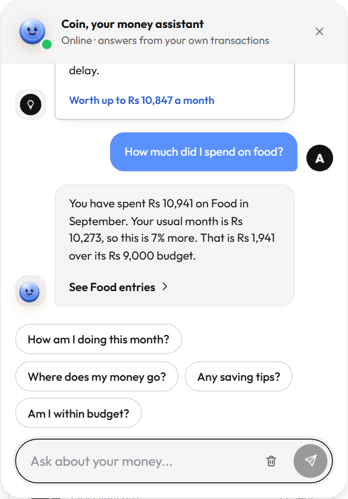
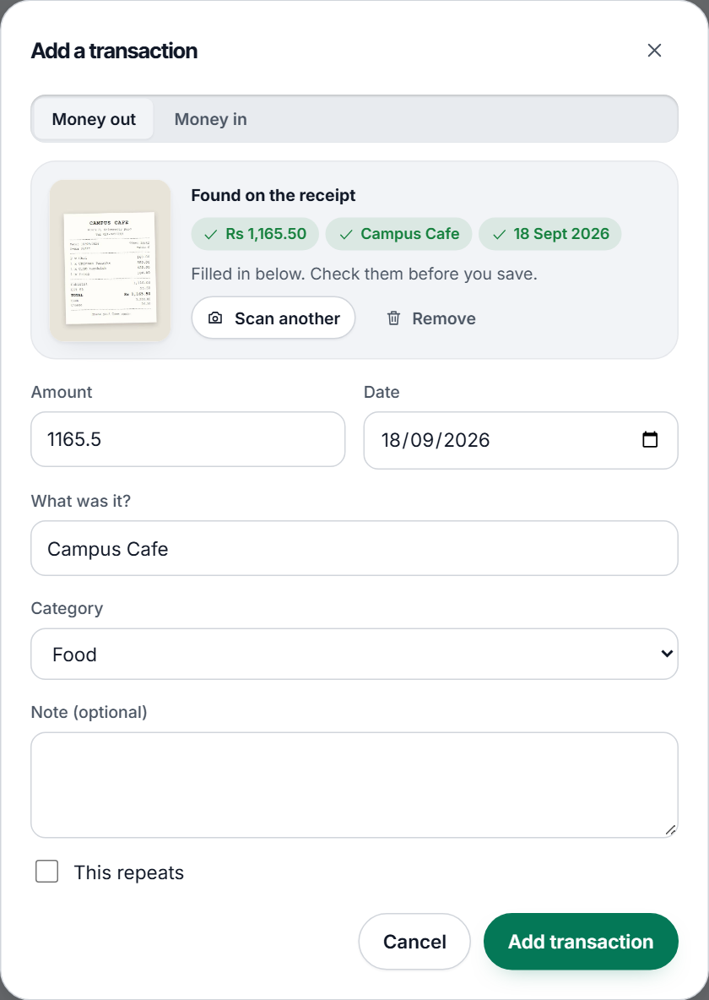
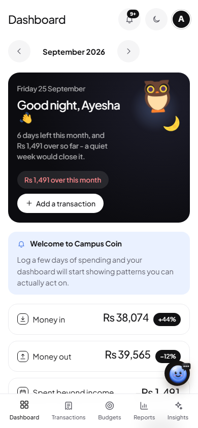

A budget and expense tracker built for an allowance that lands when it lands — not for a salary and a bank feed.
Students are paid irregularly — an allowance when it arrives, a bit of tutoring money, a scholarship instalment — and general personal-finance apps assume a salary and a bank feed. Campus Coin assumes neither.
Everything is entered by hand or imported from a CSV, and every piece of advice the application gives is built from the student's own transactions. Nothing is generic: a saving tip quotes real figures from that student's history, and the chat assistant answers from the same aggregations the reports are drawn from, so the two can never disagree.
A MongoDB server is optional. With no connection string
configured the application starts its own embedded MongoDB and stores it
in server/data/db, so it installs and demonstrates every
feature with an empty configuration file.
Requirements: Node.js 18 or newer.
# 1. Install both halves npm run setup # 2. Copy the environment template (all values are optional for a local run) cp server/.env.example server/.env # 3. Build the React front end npm run build # 4. Start it npm start
Open http://localhost:5000. The first start seeds the default categories, the administrator and two demo students with six months of history, so every chart, budget and tip has real data behind it immediately.
Two terminals, so the front end hot-reloads:
npm run dev # API on http://localhost:5000 npm run dev:client # React on http://localhost:5173 (proxies /api to the API)
With the server running (npm start), in a second terminal:
npm run test:e2e --prefix server
It registers a throwaway student and works through every functional requirement in the SRS — sign-up, login, password rules, reset, lockout and sessions, profile, categories, income and expenses, recurring entries, CSV import and export, the categoriser learning from corrections, anomaly flags, budgets and alerts, reports and filters, insights, tips, sharing, the chat assistant and every administrator control — then deletes the account. It prints PASS or FAIL for each of its 62 checks.
npm run seed
Seeding only fills what is missing; it never overwrites existing data. To
start completely fresh, delete server/data/ first.
| Role | Password | |
|---|---|---|
| Administrator | admin@campuscoin.app | Admin@12345 |
| Student | student@campuscoin.app | Student@12345 |
| Student | bilal@campuscoin.app | Student@12345 |
Students sign in at /login. The administrator has a
separate, direct-access sign-in at /admin/login,
which posts to its own endpoint and refuses any account that is not an
administrator — a student's password is useless there even with the URL.
The demo accounts are shared, so their passwords are fixed: they cannot be changed, reset or locked out, and anyone evaluating the application can always sign in with the table above. Register a new account to exercise the password features.
The SRS asks for secure sessions, hashed passwords, and recovery through a tokenised link. How Campus Coin does each.
Passwords are hashed with bcrypt (cost 10, a salt per password) and never
stored or logged in readable form (server/src/models/User.js).
At least 8 characters, letters and numbers, not one of the most common
passwords and not built from the account's own name or email
(server/src/utils/passwords.js). The sign-up, reset and change
forms show the same rules as a live checklist with a strength meter.
"Forgot password" emails a random 64-character token that works once, for one hour; only its SHA-256 hash is stored. The reset page checks the link before showing the form and says so plainly when it has expired. The live site sends real email through Gmail (SMTP with an app password, kept in Vercel's encrypted settings, never in the code), and there the link is only ever emailed — showing it on screen would let anyone who knows an address reset that account. On a development machine with no email set up, the link is shown on screen instead so the flow can still be demonstrated. The reply is the same whether or not the email has an account, so the form cannot be used to find accounts.
There is no form that sets a new password directly: "Change password" in
Settings emails a one-time, one-hour link to the account's own address, and
the new password is chosen from that link — so a stolen, still-signed-in
session is not enough to take over an account. The old in-place endpoint
answers 410 Gone.
Every sign-in token carries the account's session version. Changing or resetting the password raises it, which signs out every other device at once; Settings also has Sign out everywhere. A disabled account loses access immediately.
Five wrong passwords in a row lock sign-in for 15 minutes; a password reset lifts the lock.
The administrator can issue a temporary password (random, from the crypto module, shown once). It signs the student out everywhere, and every page asks them to choose their own until they do.
A password change or reset sends a "your password was changed" email, so an
account holder notices one they did not make. Welcome, password-link,
"password changed" and monthly summary emails share one HTML layout
(server/src/services/emailTemplate.js): a PNG banner (Gmail
does not show SVG), a 600px table with inline styles, one button, and a
plain-text version alongside.
Everything in server/.env is optional. The application is
designed to run and demonstrate every feature with an empty file.
| Variable | What it does when set | What happens when it is not |
|---|---|---|
MONGO_URI |
Uses that MongoDB (local or Atlas) | Starts an embedded MongoDB in server/data/db |
JWT_SECRET |
Signs session tokens | A development default is used |
SMTP_HOST, SMTP_PORT, SMTP_USER, SMTP_PASS, MAIL_FROM |
Sends password-reset links, "password changed" alerts and shared reports. For Gmail: smtp.gmail.com, port 465, the address, and a 16-character app password |
On a development machine the reset link is shown on screen instead; on a live deployment nothing is sent and no link is shown |
ANTHROPIC_API_KEY |
Monthly summaries are rewritten by Claude | Summaries come from the built-in statistical engine |
CRON_SECRET |
Protects the daily recurring-transaction endpoint | The endpoint refuses all callers; the local server runs the job on a timer anyway |
| Layer | What was used, and what was not |
|---|---|
| Front end | React 18 with React Router, built by Vite. No UI framework and no component library: the design system, the layout and all four chart types are written from scratch in CSS and SVG (client/src/styles/, client/src/components/Charts.jsx). |
| Back end | Node.js with Express 5 and Mongoose. |
| Database | MongoDB, with an embedded instance as the zero-configuration fallback. |
| Deployment | Configured for Vercel (vercel.json + api/index.mjs), with the API as a serverless function and the built client served as static files. |
Everything that makes a judgement lives in server/src/services/,
separately from the routes that serve it.
| File | What it decides |
|---|---|
analytics.js | The shared aggregations. Reports, tips, insights and the forecast all read their numbers from here, so they can never disagree with each other. |
categorizer.js | Suggests a category from a description. |
tips.js | Builds the saving tips and estimates what each is worth. |
insights.js | Writes the monthly summary. |
anomaly.js | Flags unusually large and duplicate transactions. |
forecast.js | Projects next month. |
recurring.js | Writes recurring entries when they come due. |
alerts.js | Raises budget warnings. |
csv.js | Imports and exports transaction files. |
chat.js | Works out what a chat question is asking and answers it from the figures above. |
llm.js | Optional: rewrites an already-computed summary in warmer language, and answers chat questions the rules did not recognise. |
The SRS asks for AI assistance in two places, and for a chatbot. They are separate features, and a language model is only ever an optional finishing step: every figure is calculated by Campus Coin itself.
Runs entirely on Campus Coin's own server. Each word of a description is
counted against the category the student actually chose, building a
per-student word-to-category frequency table (CategoryHint).
Correcting a suggestion is what teaches it: the correction records a
different pairing than the one that was proposed, so the next guess leans
the other way. A new account starts from seed keywords on the default
categories until it has a history of its own. Every suggestion shows its
confidence and its reason, and can always be overridden.
Computes every figure from the database first, then — only if
ANTHROPIC_API_KEY is set — asks Claude to rewrite those
already-computed facts in friendlier language. The model is never asked to
do arithmetic, so a summary cannot contradict the report it came from.
Without a key the built-in statistical writer produces the summary instead,
and the feature reports which one wrote it.
The SRS's "AI ChatBot" lives in the bubble in the corner of every student
page; what it has learned, and a button to make it forget, are in Settings.
It is built in rather than embedded from tawk.to or Tidio, because a
third-party widget cannot see the student's data. A rule-based router in
chat.js recognises the kind of question being asked (balance,
one category, the category breakdown, budgets, the forecast, the largest
expense, saving tips, "can I afford 2,500?", "which category is chai at the
canteen?", this month against last) and answers from the same aggregations
the reports use. Only a question no rule recognises is passed to Claude, and
only if a key is set, together with a sheet of already-computed facts and an
instruction to use nothing else. The conversation is kept in the browser tab
and is never stored on the server.
The SRS's optional OCR. In the add-transaction form a student takes or drops
a photo of a receipt (or tries one of the two samples in
client/public/samples). The photo is shrunk in the browser and
read with Tesseract OCR, also in the browser — no API key and nothing is
uploaded to be read. Plain rules in client/src/lib/receipt.js
then pick out the amount paid (preferring "grand total", "net payable" and
"total" lines and ignoring subtotal, tax, cash and change), the shop and the
date, fill the form, and let the categoriser suggest the category. The
student checks everything before saving.
Not AI at all. Each rule compares this month against the student's own three-month average and states how much money the advice is worth per month; the list is ranked by that figure. No tip is generic — every one quotes real numbers from that student's history.
A least-squares line through the last six months. It refuses to answer with fewer than three months of data and reports how far the line typically sits from the actual points, rather than implying precision it does not have.
None of this is financial advice, and the interface says so where it matters.
The interface is written rather than assembled. A few decisions worth naming.
Both are designed against their own surface rather than one being an inversion of the other. The choice is saved to the device and the account, so it follows the student to another machine. Settings also offers "match my device", which follows the operating system live.
The application sits in a black frame with a slim rail of round icon buttons
that slides open on hover to show each page's name; the content is one white
panel with large rounded corners, buttons are black pills, and one blue
(#5b91ff) carries the figures. Categories take shades of blue
and grey. Text is set in Plus Jakarta Sans. The styles live in
client/src/styles/design9.css; the code and all the copy are
our own.
Every category has its own object — a burger for Food, a bus for Transport,
a house for Hostel/Rent — drawn from Microsoft's Fluent Emoji
in the flat style (MIT licence). Only the 49 SVGs the application uses are
copied into client/src/assets/emoji, with the licence beside
them, so nothing is fetched from outside. Menu and button icons stay as
clean line icons (Icon.jsx), drawn on one 24px grid following
the Lucide conventions.
When a transaction names a company — "Netflix share", "Foodpanda dinner",
"Spotify Premium", "Daraz", "JazzCash", "PTCL" — the list shows that
company's logo on its brand colour instead of the category picture
(client/src/lib/brands.js). The logos come from
Simple Icons (CC0), bundled with the application. Careem
and inDrive are not in that set, so they get a tile in their brand colour
with their initial rather than an imitation logo. The logos only identify
the merchant; Campus Coin is not affiliated with them.
Money in against money out is drawn as paired bars built from HTML
(MonthBars in DashCharts.jsx), so the scale,
months and figures stay full size on any screen instead of shrinking with an
SVG. Tapping a month shows its three figures. The trend lines on the report
cards are labelled with their first and last month.
A personal greeting; the month's balance as money in against money out; quick-add buttons (chai, rickshaw, printing, allowance) that open the form already filled in; saving tips and Coin's insight built from the student's own history; and the two named widgets — This Month's Top Category (its picture, amount and share) and Budget vs. Actual (each budget's cap against what was spent, with a status). Categories has a Manage Own Categories section for adding, editing and deleting personal income and expense categories beside the defaults.
Sections arrive top to bottom, charts draw themselves (the donut sweeps in ranked order, lines trace, bars grow), headline figures count up, and budget bars fill — the SRS's "smooth transitions while charts and insights are generated". Every entrance ends at the element's normal resting style, so with the system's reduced-motion setting on, pages simply appear complete.
Text size is adjustable from Settings and scales the whole interface,
charts included. Keyboard focus is always visible,
prefers-reduced-motion is respected, the layout works down to
360px, and every chart is backed by a table of the same numbers.
MONGO_URI (or connect
the Atlas integration, which provides MONGODB_URI).
This is required — the embedded database cannot run in a
serverless function.
JWT_SECRET and CRON_SECRET.vercel.json handles the build, the API routing and the
daily cron that writes recurring transactions.
server/src/seed/)/ and /sitemapThe screens a student meets, in the order they meet them.





